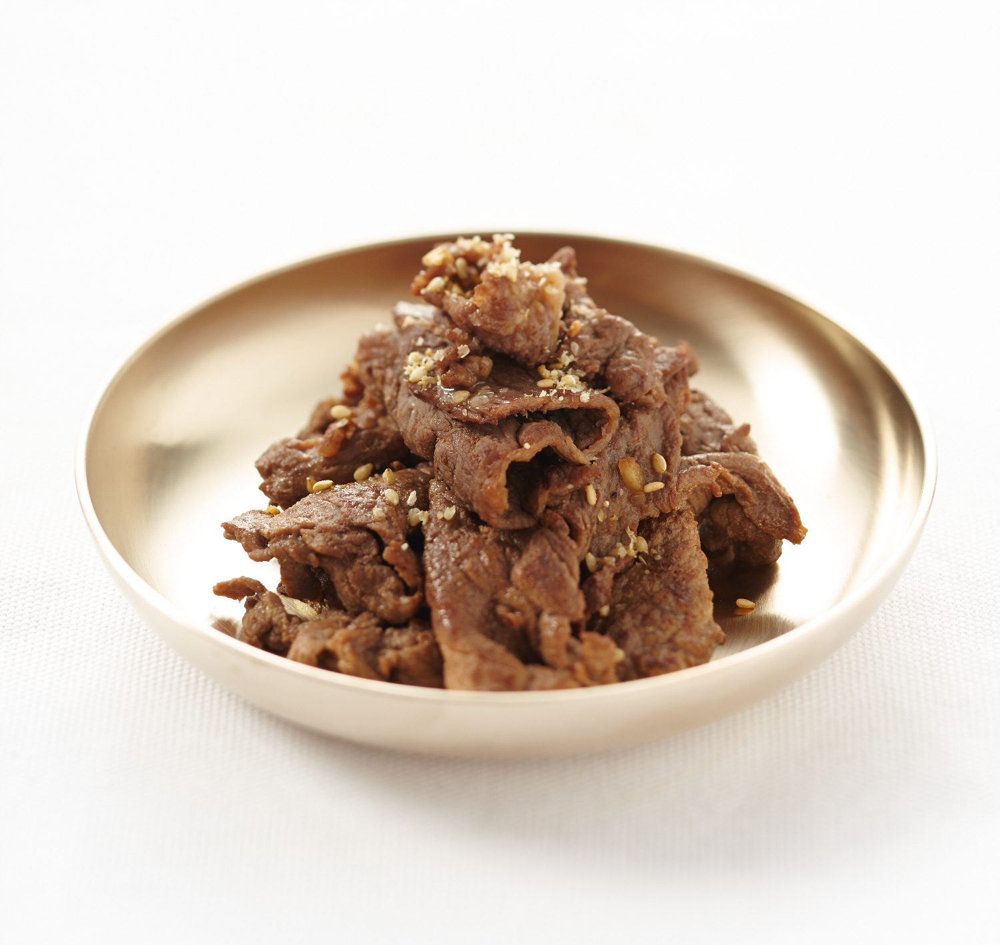

Bulgogi Beef

Ingredients
- 1 lb thinly sliced beef (ribeye or sirloin)
- 1/2 onion, sliced
- 2 green onions, chopped
- 2 tbsp soy sauce
- 1 tbsp sugar
- 1 tbsp honey
- 1 tbsp sesame oil
- 1 tbsp minced garlic
- 1 tsp black pepper
Instructions
- In a bowl, mix soy sauce, sugar, honey, sesame oil, garlic, and pepper.
- Add sliced beef and onions to the bowl.
- Mix well and marinate for at least 30 minutes.
- Heat a pan over medium-high heat.
- Cook beef until fully done and slightly caramelized.
- Top with green onions and serve with rice.
Home